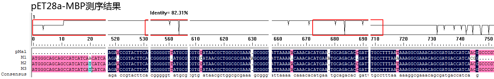
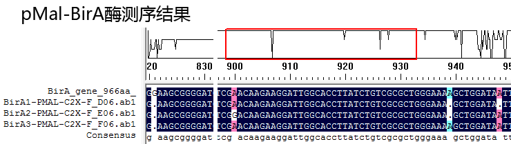

1.构建载体pMal-BirA； 2.构建载体pET28a-MBP-BirA； 1）.先构建的pET28a-MBP质粒； 2）.然后构建的pET28a-MBP-BirA质粒； BirA酶载体基本信息 pET28a-MBP-BirA T7 20mer 5'-d(TAATACGACTCACTATAGGG)-3'
pMal-BirA pMAL-C2X-F 20mer 5'-d(TGCGTACTGCGGTGATCAAC)-3' BirA酶简介 T7 promoter http://tigomall.blog.163.com/blog/static/212778079201411279181573/ T7启动子： TAATACGACTCACTATA(GGG) MBP BirA http://www.ncbi.nlm.nih.gov/nucleotide/313848522?from=4081127&to=4082092&report=gbwithparts product="UDP-N-acetylenolpyruvoylglucosamine reductase" 1..966 gene="birA"birABirA载体序列
>BirA gene(966bp) ATGAAGGATAACACCGTGCCACTGAAATTGATTGCCCTGTTAGCGAACGGTGAATTTCACTCTGGCGAGCAGTTGGGTGAAACGCTGGGAATGAGCCGGGCGGCTATTAATAAACACATTCAGACACTGCGTGACTGGGGCGTTGATGTCTTTACCGTTCCGGGTAAAGGATACAGCCTGCCTGAGCCCATCCAGTTACTTAATGCTGAACAGATATTGGGTCAGCTGGATGGCGGTAGTGTAGCCGTGCTGCCAGTTATTGACTCCACGAATCAGTACCTTCTTGATCGTATCGGAGAGCTTAAATCGGGCGATGCCTGTGTTGCAGAATACCAGCAGGCTGGCCGTGGTCGCCGGGGGCGGAAATGGTTTTCGCCTTTTGGCGCAAACTTATATTTGTCGATGTTCTGGCGTCTGGAACAAGGCCCGGCGGCGGCGATTGGTTTAAGTCTGGTTATCGGTATCGTGATGGCGGAAGTATTACGCAAGCTGGGAGCAGATAAAGTTCGTGTCAAATGGCCTAATGACCTCTATCTGCAGGATCGCAAGCTGGCAGGCATTCTTGTGGAGCTGACTGGCAAAACTGGCGATGCGGCGCAAATAGTCATTGGAGCCGGGATCAACATGGCAATGCGCCGTGTTGAAGAGAGTGTCGTTAATCAGGGGTGGATCACGCTGCAGGAAGCGGGGATCAATCTCGATCGTAATACGTTGGCGGCCATGCTAATACGTGAATTACGTGCTGCGTTGGAACTCTTCGAACAAGAAGGATTGGCACCTTATCTGTCGCGCTGGGAAAAGCTGGATAATTTTATTAATCGCCCAGTGAAACTTATCATTGGTGATAAAGAAATATTTGGCATTTCACGCGGAATAGACAAACAGGGGGCTTTATTACTTGAGCAGGATGGAATAATAAAACCCTGGATGGGCGGTGAAATATCCCTGCGTAGTGCAGAAAAATAA
>BirA(321aa) MKDNTVPLKLIALLANGEFHSGEQLGETLGMSRAAINKHIQTLRDWGVDVFTVPGKGYSLPEPIQLLNAEQILGQLDGGSVAVLPVIDSTNQYLLDRIGELKSGDACVAEYQQAGRGRRGRKWFSPFGANLYLSMFWRLEQGPAAAIGLSLVIGIVMAEVLRKLGADKVRVKWPNDLYLQDRKLAGILVELTGKTGDAAQIVIGAGINMAMRRVEESVVNQGWITLQEAGINLDRNTLAAMLIRELRAALELFEQEGLAPYLSRWEKLDNFINRPVKLIIGDKEIFGISRGIDKQGALLLEQDGIIKPWMGGEISLRSAEK>28aM1-T7_F01.ab1(测得不好，投诉后重测的) CNCNNNNACCGCNNNNTCCCTCTAGAATAATTTTGTTTAACTTTAAGAAGGAGATATACCatgGGCAGCAGCCATCATCATCATCATCACAGCAGCGGCCTGGTGCCGCGCGGCAGCcatatgAAAATCGAAGAAGGTAAACTGGTAATCTGGATTAACGGCGATAAAGGCTATAACGGTCTCGCTGAAGTCGGTAAGAAATTCGAGAAAGATACCGGAATTAAAGTCACCGTTGAGCATCCGGATAAACTGGAAGAGAAATTCCCACAGGTTGCGGCAACTGGCGATGGCCCTGACATTATCTTCTGGGCACACGACCGCTTTGGTGGCTACGCTCAATCTGGCCTGTTGGCTGAAATCACCCCGGACAAAGCGTTCCAGGACAAGCTGTATCCGTTTACCTGGGATGCCGTACGTTACAACGGCAAGCTGATTGCTTACCCGATCGCTGTTGAAGCGTTATCGCTGATTTATAACAAAGATCTGCTGCCGAACCCGCCAAAAACCTGGGAAGAGATCCCGGCGCTGGATAAAGAACTGAAAGCGAAAGGTAAGAGCGCGCTGATGTTCAACCTGCAAGAACCGTACTTCACCTGGCCGCTGATTGCTGCTGACGGGGGTTATGCGTTCAAGTATGAAAACGGCAAGTACGACATTAAAGACGTGGGCGTGGATAACGCTGGCGCGAAAGCGGGTCTGACCTTCCTGGTTGACCTGATTAAAAACAAACACATGAATGCAGACACCGATTACTCCATCGCAGAAGCTGCCTTTAATAAGGCGAAACAGCGATGACCATCAACGGCCCGTGGGCATGGTCCAACATCGACACCAGCAAAGTGAATTATGGTGTAACGGTACTGCCGACCTTCAAGGGTCAACCATCCAAACCGTTCGTTGGCGTGCTGAGCGCAGGTATTAACGCCGCCAGTCCGAACAAAGAGCTGGCAAAGAGTTCCTCGAAACTATCTGCTGACTGATGAAGGTCTGGAAGCGGTTAATAAGACAAACCGCTGGGTGCCGTAGCGCTGAGTCTTACGAGGAGAGTTGGCGAAAGATCCACGTATTGCCGCCACCATGAAAAACGCCCAGAAAGGTGAAATCATGCGACATCCCGCAGAANGTCCGCTTCTGGNNTGGCGTGCGTACCTGCGGTGATCACGCCNNNGCGNTCGTCNAGAACTGNTCGATGAAGCCCATGNNNNNACGNNNNN
>28aM2-T7_B06.ab1 TNNNNTTNAGNNNATTTCCCCTCTAGAATATTTTGTTTAACTTTAAGAGGAGATATACCatgGGCAGCAGCCATCATCATCATCATCACAGCAGCGGCCTGGTGCCGCGCGGCAGCcatatgAAAATCGAAGAAGGTAAACTGGTAATCTGGATTAACGGCGATAAAGGCTATAACGGTCTCGCTGAAGTCGGTAAGAAATTCGAGAAAGATACCGGAATTAAAGTCACCGTTGAGCATCCGGATAAACTGGAAGAGAAATTCCCACAGGTTGCGGCAACTGGCGATGGCCCTGACATTATCTTCTGGGCACACGACCGCTTTGGTGGCTACGCTCAATCTGGCCTGTTGGCTGAAATCACCCCGGACAAAGCGTTCCAGGACAAGCTGTATCCGTTTACCTGGGATGCCGTACGTTACAACGGCAAGCTGATTGCTTACCCGATCGCTGTTGAAGCGTTATCGCTGATTTATAACAAAGATCTGCTGCCGAACCCGCCAAAAACCTGGGAAGAGATCCCGGCGCTGGATAAAGAACTGAAAGCGAAAGGTAAGAGCGCGCTGATGTTCAACCTGCAAGAACCGTACTTCACCTGGCCGCTGATTGCTGCTGACGGGGGTTATGCGTTCAAGTATGAAAACGGCAAGTACGACATTAAAGACGTGGGCGTGGATAACGCTGGCGCGAAAGCGGGTCTGACCTTCCTGGTTGACCTGATTAAAAACAAACACATGAATGCAGACACCGATTACTCCATCGCAGAAGCTGCCTTTAATAAAGGCGAAACAGCGATGACCATCAACGGCCCGTGGGCATGGTCCAACATCGACACCAGCAAAGTGAATTATGGTGTAACGGTACTGCCGACCTTCAAGGGTCAACCATCCAAACCGTTCGTTGGCGTGCTGAGCGCAGGTATTAACGCCGCCAGTCCGAACAAAGAGCTGGCAAAGAGTTCCTCGAAACTATCTGCTGACTGATGAAGGTCTGGAAGCGGNTAATAAAGACAACCGCTGGGTGCCGTAGCGCTGAAGTTCTTACGAGGAAGAGTTGGCGAAAGATCCACGTATTGCGCCACCATGGANCGCCAGAAAAGTGAAATCATGCGACATCCCGCNNTGTCCGCTTTCTNNNGCCTGNGTACTGNGGNGATTCNACGCCGCCAGCGTCGTTCAACTTGTNNATNANNCNGAAAGAACNNCN
>28aM3-T7_C06.ab1 NNNNNGNNCNNANACAATTCCCTCTAGAATAATTTTGTTTAACTTTAAGAAGGAGATATACCatgGGCAGCAGCCATCATCATCATCATCACAGCAGCGGCCTGGTGCCGCGCGGCAGCcatatgAAAATCGAAGAAGGTAAACTGGTAATCTGGATTAACGGCGATAAAGGCTATAACGGTCTCGCTGAAGTCGGTAAGAAATTCGAGAAAGATACCGGAATTAAAGTCACCGTTGAGCATCCGGATAAACTGGAAGAGAAATTCCCACAGGTTGCGGCAACTGGCGATGGCCCTGACATTATCTTCTGGGCACACGACCGCTTTGGTGGCTACGCTCAATCTGGCCTGTTGGCTGAAATCACCCCGGACAAAGCGTTCCAGGACAAGCTGTATCCGTTTACCTGGGATGCCGTACGTTACAACGGCAAGCTGATTGCTTACCCGATCGCTGTTGAAGCGTTATCGCTGATTTATAACAAAGATCTGCTGCCGAACCCGCCAAAAACCTGGGAAGAGATCCCGGCGCTGGATAAAGAACTGAAAGCGAAAGGTAAGAGCGCGCTGATGTTCAACCTGCAAGAACCGTACTTCACCTGGCCGCTGATTGCTGCTGACGGGGGTTATGCGTTCAAGTATGAAAACGGCAAGTACGACATTAAAGACGTGGGCGTGGATAACGCTGGCGCGAAAGCGGGTCTGACCTTCCTGGTTGACCTGATTAAAAACAAACACATGAATGCAGACACCGATTACTCCATCGCAGAAGCTGCCTTTAATAAAGGCGAAACAGCGATGACCATCAACGGCCCGTGGGCATGGTCCAACATCGACACCAGCAAAGTGAATTATGGTGTAACGGTACTGCCGACCTTCAAGGGTCAACCATCCAAACCGTTCGTTGGCGTGCTGAGCGCAGGTATTAACGCCGCCAGTCCGAACAAAGAGCTGGCAAAGAGTTCCTCGAAAACTATCTGCTGACTGATGAGGTCTGGAAGCGGTTAATAAAGGACAACCGCTGGGGTGCCGTAGCGCTGANTCTTACGAGGAAGGAGTTGGCGAAAGATCCACGTATTGGCCGCCACCATGGAAAACGCCCAGAAAGGTGAAATCATGGCGANNTCCGGCAGATGTCCGCTTTCTGGNATGNNNGNNGTACTGGNGGGTGATCACGCCGCCAGGCGNTCGTCNNGACTTGTTCGAATNGAGCCCNNGGAAGGAGANGCGCGNGGAAN
重新测28aM1样品，因为后续的pET28a-MBP-BirA载体是基于该样品构建的。
已经测过。上面就是重测的结果。
>BirA1-BirALine1Up_G08.ab1-revCom(从BirA第一行向前，测一个反应) CGTCCGTXATGAAAATTTCGGTAAATGATACCCGGTXTTAAAGTXXCCCGTGAGCATCCTGGAATAAGGTAGGAGGAGAAATTCCCTCAAGTAGCGGXACTGCTGATXTCCTGAGCATATATTCTGGGCACACGACCGCTTTGGTAGCTACGCTCAATCTGTCCTTGTGGTTTGAAATCACCCCGGACCAAAGCGTCCCAGGACAAGCTGTATCCGGTTTACGTGGGATACTGTACGTTACAACGGCAAGCTGATTGCTTACCCGATCGCTGTTGAAGCGTTATCGCTGATTTATAACAAAGATCTGCTACCGAACCCGCCAAAAACCTGGGAAGAGATCCCGGCGCTGGATAAAGAACTGAAAGCGAAAGGTAAGAGCGCGCTGATGTTCAACXTGCAAGAACCGTACTTCACCTGGCCGCTGATTGCTGCTGACGGGGGTTATGCGTTCAAGTATGAAAACGGCAAGTACGACATTAAAGACGTGGGCGTGGATAACGCTGGCGCGAAAGCGGGTCTGACCTTCCTGGTTGACCTGATTAAAAACAAACACATGAATGCAGACACCGATTACTCCATCGCAGAAGCTGCCTTTAATAAAGGCGAAACAGCGATGACCATCAACGGCCCGTGGGCATGGTCCAACATCGACACCAGCAAAGTGAATTATGGTGTAACGGTACTGCCGACCTTCAAGGGTCAACCATCCAAACCGTTCGTTGGCGTGCTGAGCGCAGGTATTAACGCCGCCAGTCCGAACAAAGAGCTGGCAAAAGAGTTCCTCGAAAACTATCTGCTGACTGATGAAGGTCTGGAAGCGGTTAATAAAGACAAACCGCTGGGTGCCGTAGCGCTGAAGTCTTACGAGGAAGAGTTGGCGAAAGATCCACGTATTGCCGCCACCATGGAAAACGCCCAGAAAGGTGAAATCATGCCGAACATCCCGCAGATGTCCGCTTTCTGGTATGCCGTGCGTACTGCGGTGATCAACGCCGCCAGCGGTCGTCAGACTGTCGATGAAGCCCTGAAAGACGCGCAGACTAATTCGAGCTCGAACAACAACAACAATAACAATAACAACAACCTCGGGATCGAGGGAAGGATTTCAgaattcGAAAACCTGTATTTCCAGGGCATGAAGGATAACACCGTGCCACTGXXXXXXXXXXXXXX
>BirA1-PMAL-C2X-F_D06.ab1 NNNNGNNNNNTNTTNNACTGTCGATGAGCCTGAAGACGCGCAGACTAATTCGAGCTCGAACAACAACAACAATAACAATAACAACAACCTCGGGATCGAGGGAAGGATTTCAgaattcGAAAACCTGTATTTCCAGGGCATGAAGGATAACACCGTGCCACTGAAATTGATTGCCCTGTTAGCGAACGGTGAATTTCACTCTGGCGAGCAGTTGGGTGAAACGCTGGGAATGAGCCGGGCGGCTATTAATAAACACATTCAGACACTGCGTGACTGGGGCGTTGATGTCTTTACCGTTCCGGGTAAAGGATACAGCCTGCCTGAGCCCATCCAGTTACTTAATGCTGAACAGATATTGGGTCAGCTGGATGGCGGTAGTGTAGCCGTGCTGCCAGTTATTGACTCCACGAATCAGTACCTTCTTGATCGTATCGGAGAGCTTAAATCGGGCGATGCCTGTGTTGCAGAATACCAGCAGGCTGGCCGTGGTCGCCGGGGGCGGAAATGGTTTTCGCCTTTTGGCGCAAACTTATATTTGTCGATGTTCTGGCGTCTGGAACAAGGCCCGGCGGCGGCGATTGGTTTAAGTCTGGTTATCGGTATCGTGATGGCGGAAGTATTACGCAAGCTGGGAGCAGATAAAGTTCGTGTCAAATGGCCTAATGACCTCTATCTGCAGGATCGCAAGCTGGCAGGCATTCTTGTGGAGCTGACTGGCAAAACTGGCGATGCGGCGCAAATAGTCATTGGAGCCGGGATCAACATGGCAATGCGCCGTGTTGAAGAGAGTGTCGTTAATCAGGGGTGGATCACGCTGCAGAAGCGGGGATCAATCTCGATCGTAATACGTTGGCGGCCATGCTAATACGTGAATTACGTGCTGCGTTGGAACTCTTCGAACAAGAAGGATTGGCACCTTATCTGTCGCGCTGGGAAAGCTGGATATTTTATTAATCGCCCAGTGAAACTTATCATTGGTGATAAAGAAATATTTGGCATTTCACGCGGAATAGACAACNGGGGCTTTATTACTTGAGCAGATGGAATATAANCCTNNTGGGCGTGAATATCCTGCGTAGTGCAGAAAAATAAAGCTNNACTNNNGTCGTTTACACGTCNGACTGGNAAACCNGNGTACCCACTTATCGCTGCAGNANATCCCCTTTCGCNNCTGGCGTANTAGCGAAGAGGCCCGNNCGATNNNNN
>BirA1-PMAL-C2X-R_E02.ab1-revCom(反向又测了一个反应) TTCXTGCCGAAXCATXCCCGCCXGXXTTCGCTTTTCXGTATGXCGTGGCGTACTGCGTGATCXXGCCGXCAGCCGTCGTCAGXCTXTTCGATGAAGCCTGAAAGACGGCAGACTATTCGAGCTCGACACACACATACATACAXACTCGGGATCGAGGGAAGGATTTCAgaattcGAAAACCTGTTATTTCCAGGGCATGAAGGATAACACCGTGCCACTGAAATTGATTGCCTGTTAGCGAACGGTGAATTTCACTCTGGCGAGCAGTTGGGTGAAACGCTGGGAATGAGCCGGGCGGCTATTAATAAACACATTCAGACACTGCGTGACTGGGGCGTTGATGTCTTTACCGTTCCGGGTAAAGGATACAGCCTGCCTGAGCCCATCCAGTTACTTAATGCTGAACAGATATTGGGTCAGCTGGATGGCGGTAGTGTAGCCGTGCTGCCAGTTATTGACTCCACGAATCAGTACCTTCTTGATCGTATCGGAGAGCTTAAATCGGGCGATGCCTGTGTTGCAGAATACCAGCAGGCTGGCCGTGGTCGCCGGGGGCGGAAATGGTTTTCGCCTTTTGGCGCAAACTTATATTTGTCGATGTTCTGGCGTCTGGAACAAGGCCCGGCGGCGGCGATTGGTTTAAGTCTGGTTATCGGTATCGTGATGGCGGAAGTATTACGCAAGCTGGGAGCAGATAAAGTTCGTGTCAAATGGCCTAATGACCTCTATCTGCAGGATCGCAAGCTGGCAGGCATTCTTGTGGAGCTGACTGGCAAAACTGGCGATGCGGCGCAAATAGTCATTGGAGCCGGGATCAACATGGCAATGCGCCGTGTTGAAGAGAGTGTCGTTAATCAGGGGTGGATCACGCTGCAGGAAGCGGGGATCAATCTCGATCGTAATACGTTGGCGGCCATGCTAATACGTGAATTACGTGCTGCGTTGGAACTCTTCGAACAAGAAGGATTGGCACCTTATCTGTCGCGCTGGGAAAAGCTGGATAATTTTATTAATCGCCCAGTGAAACTTATCATTGGTGATAAAGAAATATTTGGCATTTCACGCGGAATAGACAAACAGGGGGCTTTATTACTTGAGCAGGATGGAATAATAAAACCCTGGATGGGCGGTGAAATATCCCTGCGTAGTGCAGAAAAATAAaagcttGGCACTGGCCGTCGTTTACAACGTCGTGACTGAAXXXXXXXXXX
正反向测序结果拼接之后：
>pMal-BirA1 NNNNGNNNNNTNTTNNACTGTCGATGAGCCTGAAGACGCGCAGACTAATTCGAGCTCGAACAACAACAACAATAACAATAACAACAACCTCGGGATCGAGGGAAGGATTTCAgaattcGAAAACCTGTATTTCCAGGGCATGAAGGATAACACCGTGCCACTGAAATTGATTGCCCTGTTAGCGAACGGTGAATTTCACTCTGGCGAGCAGTTGGGTGAAACGCTGGGAATGAGCCGGGCGGCTATTAATAAACACATTCAGACACTGCGTGACTGGGGCGTTGATGTCTTTACCGTTCCGGGTAAAGGATACAGCCTGCCTGAGCCCATCCAGTTACTTAATGCTGAACAGATATTGGGTCAGCTGGATGGCGGTAGTGTAGCCGTGCTGCCAGTTATTGACTCCACGAATCAGTACCTTCTTGATCGTATCGGAGAGCTTAAATCGGGCGATGCCTGTGTTGCAGAATACCAGCAGGCTGGCCGTGGTCGCCGGGGGCGGAAATGGTTTTCGCCTTTTGGCGCAAACTTATATTTGTCGATGTTCTGGCGTCTGGAACAAGGCCCGGCGGCGGCGATTGGTTTAAGTCTGGTTATCGGTATCGTGATGGCGGAAGTATTACGCAAGCTGGGAGCAGATAAAGTTCGTGTCAAATGGCCTAATGACCTCTATCTGCAGGATCGCAAGCTGGCAGGCATTCTTGTGGAGCTGACTGGCAAAACTGGCGATGCGGCGCAAATAGTCATTGGAGCCGGGATCAACATGGCAATGCGCCGTGTTGAAGAGAGTGTCGTTAATCAGGGGTGGATCACGCTGCAGGAAGCGGGGATCAATCTCGATCGTAATACGTTGGCGGCCATGCTAATACGTGAATTACGTGCTGCGTTGGAACTCTTCGAACAAGAAGGATTGGCACCTTATCTGTCGCGCTGGGAAAAGCTGGATAATTTTATTAATCGCCCAGTGAAACTTATCATTGGTGATAAAGAAATATTTGGCATTTCACGCGGAATAGACAAACAGGGGGCTTTATTACTTGAGCAGGATGGAATAATAAAACCCTGGATGGGCGGTGAAATATCCCTGCGTAGTGCAGAAAAATAAaagcttGGCACTGGCCGTCGTTTACAACGTCGTGACTGAAXXXXXXXXXX
>烟草蚀纹病毒(TEV)蛋白酶切割位点以除去His标记的(ENLYFQG)
原始序列：[GAAAACCTGTATTTCCAGGGC] [21bp] 翻译产物：[E N L Y F Q G] 翻译产物：[ENLYFQG] [7aa]
>BirA2-PMAL-C2X-F_E06.ab1 NNNGNNNNNNNNCNACTGTCGATGAGCCCTGAAGACGCGCAGACTAATTCGAGCTCGAACAACAACAACAATAACAATAACAACAACCTCGGGATCGAGGGAAGGATTTCAgaattcGAAAACCTGTATTTCCAGGGCATGAAGGATAACACCGTGCCACTGAAATTGATTGCCCTGTTAGCGAACGGTGAATTTCACTCTGGCGAGCAGTTGGGTGAAACGCTGGGAATGAGCCGGGCGGCTATTAATAAACACATTCAGACACTGCGTGACTGGGGCGTTGATGTCTTTACCGTTCCGGGTAAAGGATACAGCCTGCCTGAGCCCATCCAGTTACTTAATGCTGAACAGATATTGGGTCAGCTGGATGGCGGTAGTGTAGCCGTGCTGCCAGTTATTGACTCCACGAATCAGTACCTTCTTGATCGTATCGGAGAGCTTAAATCGGGCGATGCCTGTGTTGCAGAATACCAGCAGGCTGGCCGTGGTCGCCGGGGGCGGAAATGGTTTTCGCCTTTTGGCGCAAACTTATATTTGTCGATGTTCTGGCGTCTGGAACAAGGCCCGGCGGCGGCGATTGGTTTAAGTCTGGTTATCGGTATCGTGATGGCGGAAGTATTACGCAAGCTGGGAGCAGATAAAGTTCGTGTCAAATGGCCTAATGACCTCTATCTGCAGGATCGCAAGCTGGCAGGCATTCTTGTGGAGCTGACTGGCAAAACTGGCGATGCGGCGCAAATAGTCATTGGAGCCGGGATCAACATGGCAATGCGCCGTGTTGAAGAGAGTGTCGTTAATCAGGGGTGGATCACGCTGCAGAAGCGGGGATCAATCTCGATCGTAATACGTTGGCGGCCATGCTAATACGTGAATTACGTGCTGCGTTGGAACTCTTCGGACAAGAAGGATTGGCACCTTATCTGTCGCGCTGGGAAAGCTGGATAATTTTATTAATCGCCCAGTGAAACTTATCATTGGTGATAAAGAAATATTTGGCATTTCACGCGGAATAGACAAACAGGGGCTTTATTACTTGAGCAGGATGGATATAAAACCCTNNTGNNNGTGAATATCCCTGCGTAGTGCAGAAAATAaagcttGNNCTNNNGTCGTTTACACGTCNGACTGNNNACCCTGNNTACCCACTANCGCTGCAGNNNATCCCCTTCGCCAGCTGNNNATANCNNNNNNNGCACCGAATCGCCTTCNNCANNNTGCNCCGACCTGAATGGNGNAATGTGNCNNNNNN
>BirA3-PMAL-C2X-F_F06.ab1 NNNGANNGNNNNNACTGTCGATGAGCCCTGAAGACGCGCAGACTAATTCGAGCTCGAACAACAACAACAATAACAATAACAACAACCTCGGGATCGAGGGAAGGATTTCAgaattcGAAAACCTGTATTTCCAGGGCATGAAGGATAACACCGTGCCACTGAAATTGATTGCCCTGTTAGCGAACGGTGAATTTCACTCTGGCGAGCAGTTGGGTGAAACGCTGGGAATGAGCCGGGCGGCTATTAATAAACACATTCAGACACTGCGTGACTGGGGCGTTGATGTCTTTACCGTTCCGGGTAAAGGATACAGCCTGCCTGAGCCCATCCAGTTACTTAATGCTGAACAGATATTGGGTCAGCTGGATGGCGGTAGTGTAGCCGTGCTGCCAGTTATTGACTCCACGAATCAGTACCTTCTTGATCGTATCGGAGAGCTTAAATCGGGCGATGCCTGTGTTGCAGAATACCAGCAGGCTGGCCGTGGTCGCCGGGGGCGGAAATGGTTTTCGCCTTTTGGCGCAAACTTATATTTGTCGATGTTCTGGCGTCTGGAACAAGGCCCGGCGGCGGCGATTGGTTTAAGTCTGGTTATCGGTATCGTGATGGCGGAAGTATTACGCAAGCTGGGAGCAGATAAAGTTCGTGTCAAATGGCCTAATGACCTCTATCTGCAGGATCGCAAGCTGGCAGGCATTCTTGTGGAGCTGACTGGCAAAACTGGCGATGCGGCGCAAATAGTCATTGGAGCCGGGATCAACATGGCAATGCGCCGTGTTGAAGAGAGTGTCGTTAATCAGGGGTGGATCACGCTGCAGAAGCGGGGATCAATCTCGATCGTAATACGTTGGCGGCCATGCTAATACGTGAATTACGTGCTGCGTTGGAACTCTTCGAACAAGAAGGATTGGCACCTTATCTGTCGCGCTGGGAAAAGCTGGATAATTTTATTAATCGCCCAGTGAAACTTATCATTGGTGATAAGAAATATTTGGCATTTCACGCGGAATAGACAAACAGGGGCTTTATTACTTGAGCAGATGNNTAATAAACCCTNNTGGGCGTGAATATCCTGCGTANTGCAGAAAATAAAGCTGNACTGACGTCGTTTACAACGTCNGACTGNNAACCCTGNGTACCCACTANCGCCTGCAGCAATCCCTTTCGCNGCTGNNNAATANCGAAAGGCNGCACGATCGCCCTCCCCANNNN
在900bp后有错误，在测不准区域。使用反向引物重新测birA1.